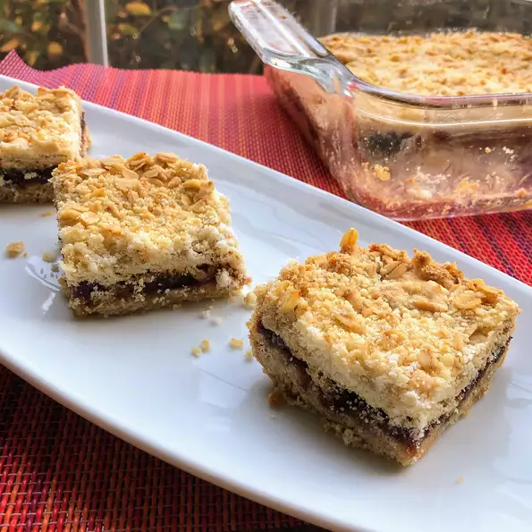

Date Crumble Recipe
Simple easy-to-make treats that will always be a hit with the family!
by CheeseWeasel

Ingredients
Filling:
- 1 cup pitted and chopped dates, or to taste
- 1/4 cup cold water, or as needed
- 2 tablespoons white sugar
- 1 teaspoon vanilla extract, or more to taste
Crumble:
- 1 3/8 cups self-sising flour
- 3/4 cup margarine
- 1 cup oats
- 3/4 cup white sugar
Directions
-
Preheat oven to 355 degrees F. Greast a 9-inch square baking dish.
-
Combine dates, water, 2 tablespoons sugar, and vanilla extract in a saucepan; cook and stir over medium heat until filling mixture forms a paste, about 5 minutes. Add more water if filling gets too thick. Remove saucepan from heat and cool.
-
Place flour in a bowl and rub margarine into flour using your hands until mixture resembles bread crumbs; stir in oats and 3/4 cup sugar. Press 1/2 of the mixture into the prepared baking dish. Spoon filling over crust, smoothing with the back of the spoon, leaving a thin border between the filling and the edge of the dish. Sprinkle the remaining crumble mixture over filling.
-
Bake in the preheated oven until top is golden brown. 40 to 45 minutes.
-
Enjoy!
Home